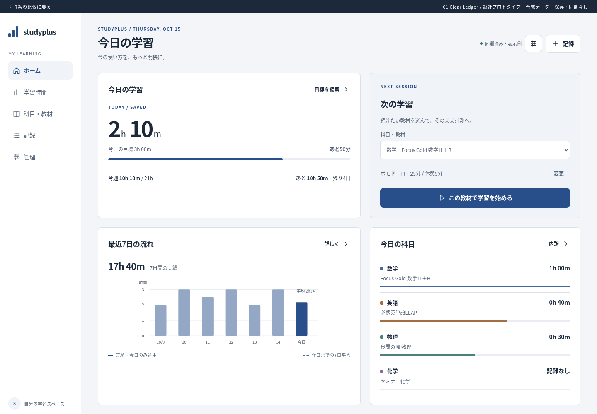
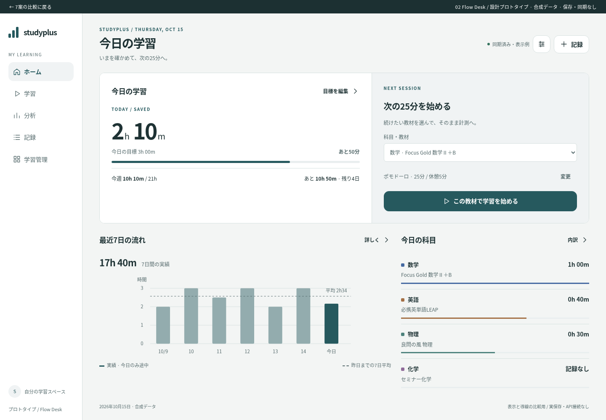
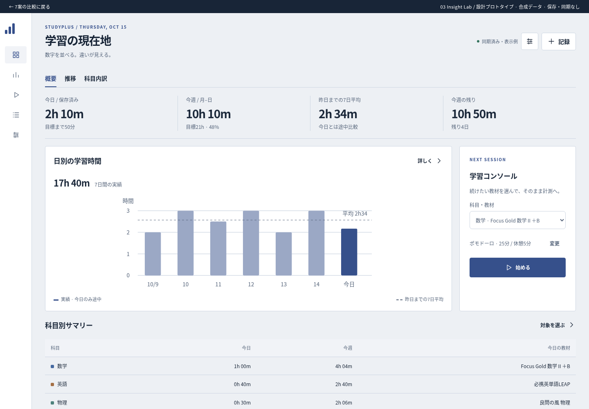
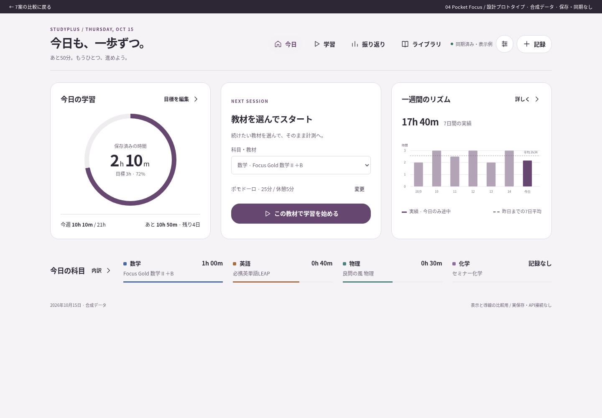
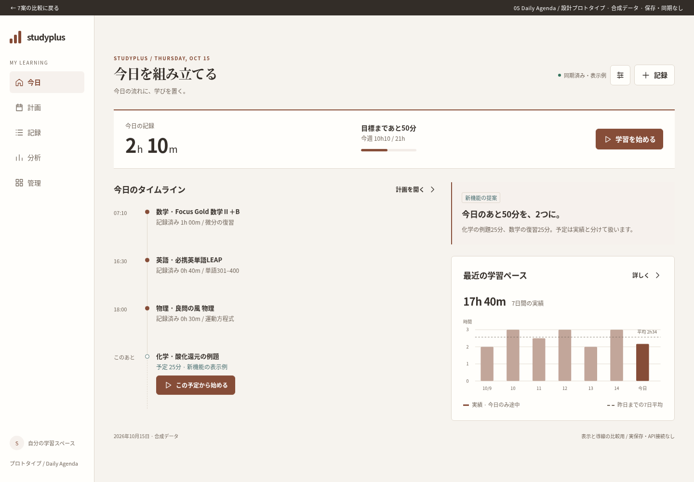
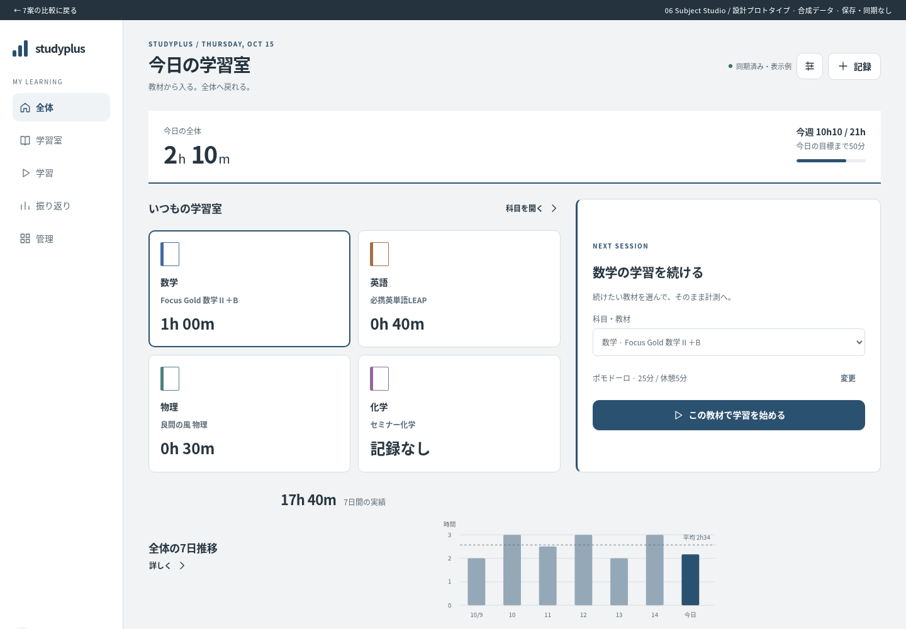
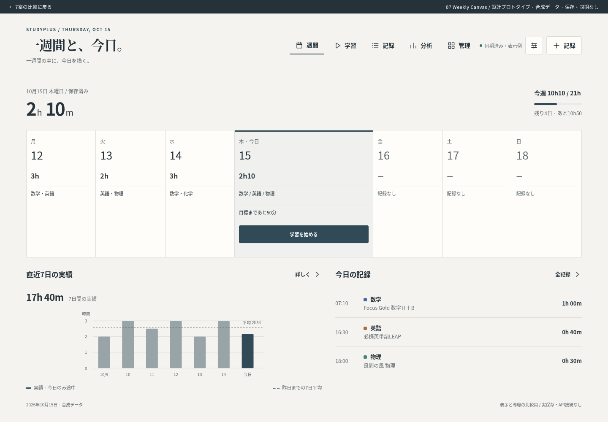

4つの情報群を保ち、カード内の区切りを減らして数値と行の整列で読ませる。


同じ学習データで比較 · 左：PC / 右：スマホ · 推薦：02 Flow Desk
4つの情報群を保ち、カード内の区切りを減らして数値と行の整列で読ませる。

今日の数値・週間の文脈・開始操作をひとつの行動面として統合。下段は比較に専念。


ホームを比較可能なデータ面にする。フィルタ・指標・チャート・表を同じ列に揃える。


今日の進捗をひと目で読める中心に置き、学習開始と記録を親指の範囲へ集約。


記録と次に行うことを時間軸で結び、数値を今日の計画の文脈で読む。


普段選ぶ科目・教材を入口にし、その対象の実績・目標・記録を同じ場所に置く。


週を空間として見せ、今日を大きく選択。今日の行動と週間目標を常に同じ画面に置く。
